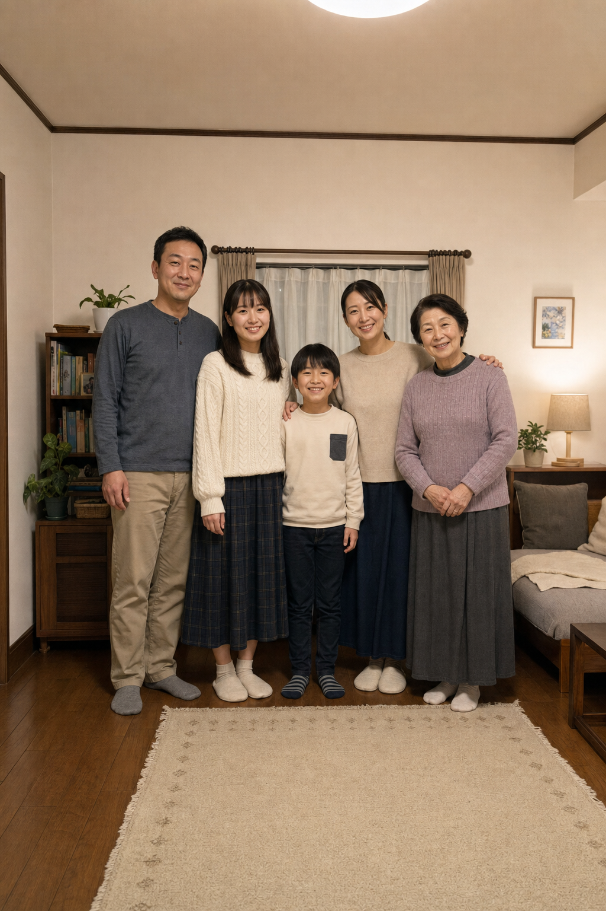

CH. 04 緊急放送
祝福警報が発令されております
CH. 04 緊急放送
祝福警報が
発令されております
画面を押して受信してください
画面をタップして放送を受信
映像は架空の緊急放送です。
CH. 04 受信通知
おめでとうございます、あなたは祝福対象として選ばれました

こちらは、生贄候補の肉羽家の皆様です。肉羽家には1体、架空の家族が紛れています。
架空の存在を選ぶことができれば、全員祝福を回避できます。
架空の生贄を選べなかった場合、肉羽家の1人が生贄として捧げられます。そしてあなたが肉羽家の新たな一員として迎えられます。
祝福を回避したい場合は、正しい選択を行なってください。
......遠くから歪んだ鯨のような鳴き声が聞こえる
写真をタップして調べる
祝福 接近中
選定期限 02:59
家族写真から
架空の存在を一名選んでください


140%
PHOTO LAB / RAW未現像領域を検出
PLAYER LOG
祝
SACRIFICE CANDIDATE